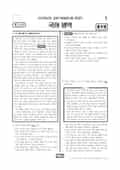

문제지

2026학년도 대학수학능력시험 · 2025년 11월 시행
2026학년도 수능 국어 화법과작문 1등급컷은 원점수 89점(비공식), 표준점수 최고점은 147점입니다.
원점수 1등급컷은 공식 발표값이 아니라 EBSi·입시기관 값입니다. 등급별 값은 등급컷 표, 출처 구분은 데이터 원칙에 있습니다.

시험지를 먼저 풀어 보세요. 등급컷·표준점수·난이도는 흐리게 가려 뒀어요.
| 등급 | 원점수 | 표준점수 | 백분위 | 누적 |
|---|---|---|---|---|
| 1 | 89 | 133 | 96 | 4.67% |
| 2 | 81 | 126 | 89 | 11.28% |
| 3 | 71 | 117 | 77 | 23.84% |
| 4 | 61 | 107 | 61 | 40.11% |
| 5 | 48 | 94 | 40 | 61.25% |
| 6 | 36 | 83 | 23 | 77.21% |
| 7 | 26 | 73 | 11 | 89.51% |
| 8 | 19 | 66 | 4 | 96.79% |
등급별 컷 · 원점수는 EBSi·입시기관 값(비공식) · 만점 100점
정답 변경 없음
이의신청 7문항 · 평가원 상세 답변 1문항
이의 요지
이의신청의 주요 내용은 다음과 같습니다. 지문 1문단에 제시된 “칸트 이전까지 유력했던 견해”에 의하면, ‘생각하는 나’의 지속만으로는 인격의 동일성을 보장하지 않는다는 ‘갑’의 입장은 옳을 수 있으므로, ③의 진술은 적절하지 않아 정답이 없다는 것입니다.
평가원 답변
2026학년도 수능 국어 영역 14~17번은 「2026학년도 수능 대비 EBS 수능 특강 국어 영역 독서」에 제시된 ‘인격 동일성에 관한 논의’와 연계된 지문 및 문항입니다. 이의신청 대상인 17번 문항은 ‘인격의 동일성’에 대한 다양한 철학자의 관점을 다룬 지문을 바탕으로 <보기>를 이해한 반응 중 가장 적절한 답지를 찾는 문항입니다.
지문에 따르면, ‘생각하는 나’인 영혼은 “칸트 이전까지 유력했던 견해”에서 “통시적으로 동일한 인격”에 해당합니다. 지문, <보기>, 선지 ③의 ‘생각하는 나’는 ‘단일한 주관으로서 지속하는 영혼’이라는 의미입니다. 한편, <보기>의 갑의 입장은 “‘생각하는 나’의 지속만으로는 인격의 동일성이 보장될 수 없고, 살아 있는 신체도 인격의 구성 요소에 포함되어야” 한다는 것입니다. 이러한 갑의 입장은 지문에서 제시하고 있는, “칸트 이전까지 유력했던 견해”의 핵심인 ‘영혼’에 대한 내용과 상이합니다. 따라서 지문과 <보기>를 토대로 정답을 ③으로 확정할 수 있으므로, 이 문항과 정답에는 이상이 없습니다.
시험 전체 관련 보도 4건은 2026학년도 대학수학능력시험 회차 페이지에 모아 두었어요.
국어 영역 전체 응시자 기준입니다. 한국교육과정평가원이 교육부 보도자료로 공개한 표준점수 도수분포로 계산했습니다.
EBSi 응답자 기준으로 가장 많이 틀린 문항은 12번(3점)이고, 오답률은 77.7%입니다. 상위 15문항 중 2문항은 정답보다 한 오답을 고른 사람이 더 많았습니다(12번: 정답 ① 22.3%, ③ 29.6%). 오답률 50%를 넘은 문항은 12개입니다.
| 순위 | 문항 | 배점 | 오답률 | 정답 | 많이 고른 오답 |
|---|---|---|---|---|---|
| 1 | 12번 | 3점 | 77.7% | ① | ③ 29.6% |
| 2 | 6번 | 2점 | 69.7% | ② | ④ 32.2% |
| 3 | 45번 | 3점 | 68.8% | ⑤ | ③ 29.9% |
| 4 | 15번 | 2점 | 67.4% | ① | ⑤ 24.1% |
| 5 | 17번 | 3점 | 62.8% | ③ | ④ 26.4% |
| 6 | 7번 | 2점 | 61.1% | ⑤ | ④ 23% |
| 7 | 40번 | 3점 | 58.3% | ⑤ | ② 17.9% |
| 8 | 16번 | 2점 | 57.3% | ② | ③ 22.4% |
| 9 | 11번 | 2점 | 56.2% | ③ | ④ 23.9% |
| 10 | 8번 | 3점 | 52.8% | ③ | ④ 18.7% |
| 11 | 34번 | 3점 | 50.8% | ③ | ④ 21.7% |
| 12 | 21번 | 3점 | 50.6% | ② | ③ 26.2% |
| 13 | 29번 | 2점 | 48.1% | ① | ② 25% |
| 14 | 23번 | 3점 | 48.1% | ① | ④ 15.3% |
| 15 | 31번 | 2점 | 47.9% | ② | ③ 21.9% |
EBSi 가채점 응답자 기준 · 전 문항 중 오답률 상위 15문항
출처: EBSi 역대 등급컷·오답률 공개 화면. 가채점에 참여한 EBSi 이용자 응답이라 전체 응시자 정답률과는 다를 수 있습니다.
발행 기관: 한국교육과정평가원(KICE). 파일 위치: 이 사이트가 보관한 사본. 저작권은 발행 기관에 있습니다. 원본과 다르거나 게시 중단이 필요하면 연락처로 알려 주세요. 등급컷 출처 구분은 데이터 원칙에서 설명합니다.
막대 색은 역대 대비 난이도 · 진한 막대가 이 시험 · 막대를 누르면 그 회차로 이동
공통과목 독서는 고프 등이 제시한 독해의 '단순 관점'(독해 능력 = 해독 × 언어 이해)을 다룬 독서론(1~3번), (가) 문리 해석·체계적 해석 등 법 해석의 방법과 (나) 보증 계약과 보증인 보호 법률을 묶은 법 지문(4~9번), 선형 열팽창 계수와 두 물질을 접합한 띠의 휨을 다룬 기술 지문(10~13번), 영혼의 실재를 근거로 인격의 동일성을 설명하던 견해를 칸트가 비판한 철학 지문(14~17번)으로 구성되었습니다. 네 지문 모두 EBS 연계교재의 제재였지만, EBS는 독서가 9월 모의평가보다 어려워졌다고 평가했습니다.
오답률 1위는 열팽창 지문의 12번(3점, 77.7%)입니다. 선형 열팽창 계수의 차이가 다른 두 종류의 띠로 만든 집게가 온도에 따라 물체를 잡는 상황을 주고, 곡률·곡률 반지름·휨이 멈추는 시점의 관계를 선지마다 구체적으로 따지게 했습니다. 법 지문에서는 담보와 보증 계약 규범을 <보기>의 상황에 적용하는 8번이 고난도로 꼽혔고, 보증인에게 대가를 지급할 의무를 지는 사람이 계약 당사자가 아니라는 점을 짚어야 하는 6번(2점, 69.7%)도 오답률이 높았습니다. 칸트 지문의 15번(2점, 67.4%)은 [A] 부분에서 답을 찾을 수 있는 질문을 고르는 문항이었습니다.
문학은 판소리 「수궁가」(18~21번), 이시영 「그리움」·고재종 「감나무 그늘 아래」와 이이의 산문 「최립에게 주는 글」을 묶은 복합 세트(22~26번), 박태순의 현대소설 「독가촌 풍경」(27~30번), 구강의 가사 「북새곡」과 연을 소재로 한 작자 미상 사설시조 두 편을 묶은 고전시가 세트(31~34번)로 구성되었습니다. 여덟 작품 중 세 작품이 EBS 연계였고, 「수궁가」는 연계교재에 실린 부분과 같은 장면이 나왔습니다.
EBS가 까다로운 문학 문항으로 꼽은 34번은 '경험의 실상과 외적 대상을 표현하는 방식'을 다룬 <보기>를 바탕으로, 북방 여정의 고충을 해학적으로 그린 「북새곡」과 근심을 적어 연을 날려 보내거나 연을 보며 임을 그리는 두 사설시조를 비교하게 한 문항입니다. 다만 EBS는 문학과 선택과목은 9월 모의평가보다 쉬워졌다고 평가했습니다.
화법과 작문은 여름에도 찬 공기가 새어 나오는 풍혈지를 소개하는 발표(35~37번), 웹툰 영상화 유행을 다룬 방송 대담과 이를 바탕으로 한 시사 동아리의 대화, 학생의 비평문(38~42번), 완벽주의적 자기 제시 성향을 설명하는 학교 신문 기고 초고(43~45번)로 구성되었습니다. EBS는 두 담화의 내용이 비평문에 반영된 양상을 묻는 40번을 어려운 문항으로 꼽았습니다.
화법과 작문 응시자 기준 오답률 50%를 넘은 문항은 12개였습니다. 공통 독서 12번 다음으로 많이 틀린 선택과목 문항은 45번(3점, 68.8%)으로, 사회적 지지 추구와 회피 행동, 정서 조절에 관한 자료를 초고의 어느 문단에 어떤 근거로 보강할지 판단하는 자료 활용 문항이었습니다.
이 회차는 표준점수 최고점 147점이 말해 주듯 상위권 변별이 독서에서 이루어진 시험입니다. 12번처럼 개념 사이의 비례·반비례 관계를 선지마다 묻는 과학·기술 문항은 지문의 관계를 직접 식이나 그림으로 정리해 두는 연습이, 6·8번 같은 법 지문은 '누가 계약의 당사자인가'처럼 법률관계의 주체를 표로 정리하며 읽는 연습이 효과적입니다. 시험 전체 흐름은 이 회차의 회차 해설에 정리했습니다.